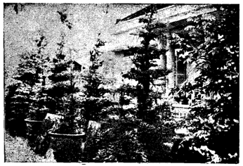
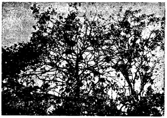

SA-ĐÉC VỚI NGHỀ LÀM GẠCH NGÓI
Ăn, mặc, ở vẫn là ba nhu cầu tối yếu của nhân loại. Từ bao giờ đến bây giờ, ai là người chẳng muốn ăn ngon, mặc đẹp, sang? Riêng về lãnh vực ở chỗ sang, tự nhiên ai cũng nghĩ đến ngôi nhà gạch ngói, tường xây, nền đúc. Nào những chung cư, cao ốc, khang trang, đẹp đẽ. tất nhiên phải cần đến vật liệu tối cần là gạch ngói.


Đây là một trong các lò gạch lớn trong tỉnh Sa-Đéc,
ở xã Tân-Xuân của ông Trần-Văn-Quế.
Trong khi quan sát sinh hoạt kinh tế trong tỉnh Sa-Đéc, tìm hiểu qua các ngành kỹ nghệ tối tân, các nghề thủ công đang trên đà cải tiến, chúng tôi được biết ở miền Hậu-Giang, ngày xưa chỉ có Vĩnh-Long và Sa-Đéc có lò gạch trước tiên.
Hơn bốn mươi năm trước, ngay từ năm 1920, tại Sa-Đéc đã có đến 9 lò gạch mà hết 7 lò thuộc về của người Huê-kiều, còn hai lò thật sự do người Việt chủ trương. Một là của ông Hội-đồng địa hạt (tức như Hội-đồng tỉnh ngày nay), Nguyễn-Hữu-Cảnh và một lò của ông Cao-Hoài-Trung. Chín lò gạch nói trên, ở rãi rác khắp nơi trong tỉnh: Mũi Cần-Lố, Đất-Sét, Tân-Xuân nằm về hữu ngạn Tiền-Giang sông Cửu-Long, địa thế tiện lợi cho sự chuyên chở. Có thể nói, các lò gạch Vĩnh-Long, Sa-Đéc đã thu hút đông đảo khách hàng ở miền Hậu-Giang những khi cần dùng đến các vật liệu xây cất ấy.
GẠCH NGÓI SA-ĐÉC DỰ CUỘC ĐẤU XẢO
Năm 1923, Hội-chợ Hà-Nội tưng bừng khai mạc, các tỉnh trong Nam thời ấy, nơi nào sản xuất những gì đặc biệt, được quan đầu tỉnh Chánh Tham-Biện khuyến khích đem món hàng ra dự cuộc đấu xảo, triển lãm cho dân chúng khắp nơi thưởng thức. Những cái hay, cái khéo của từng địa phương, được giới thiệu thích đáng.
Bấy giờ, tỉnh Sa-Đéc đã đem những món trang sức làm bằng tay do lò thợ bạc của ông Lý-Ngọc-Sơn sáng chế mà tham dự, và những bức hình phong cảnh tỉnh Sa-Đéc cũng được trưng bày. Đặc biệt gạch ngói đủ kiểu tinh xảo, đóng thùng cẩn thận, chở ra tận Hà-Nội để tranh khéo với các nghề thủ công khác, và để đồng bào ngoài Bắc được biết.
Kết quả gạch ngói Sa-Đéc được các chuyên viên thẩm định cho là tốt nhất. Ban tổ chức cấp giấy ban khen tưởng thưởng. Rước được vinh diệu cho tỉnh nhà, các lò gạch Vĩnh-Long, Sa-Đéc từ ấy thạnh lên. Chánh quyền cũng nâng đỡ, khuyến khích bằng cách xử dụng ngay gạch ngói trong tỉnh sản xuất mỗi khi xây cất dinh thự, học đường, bệnh viện và các cơ quan công cộng.
NGHỀ LÀM GẠCH NGÓI NGÀY NAY
Sa-Đéc ngày xưa có thành tích vẽ vang nghề làm gạch ngói là thế. Nhưng hiện nay thì sao? Điều thắc mắc của chúng tôi, được ông Trần-Văn-Quế giải thích khá rõ, khi chúng tôi thân đến Sa-Đéc, tìm hiểu sinh hoạt của các lò gạch ở đây.
Ông Trần-Văn-Quế, chủ lò gạch ở xã Tân-Xuân, cách Châu-Thành Sa-Đéc 3 cây số. Chúng tôi hân hạnh tiếp xúc với ông, để hỏi qua cách thức làm gạch và năng xuất mỗi tháng được bao nhiêu. Sự tiêu thụ ngày nay so với xưa kia ra sao!
Ông Quế có vẻ cảm xúc, do dự giây lâu mới phát biểu ý kiến sau đây:
- Như mọi người đều đã biết, ngày nay nhà cửa nhan nhản những mái tôn (tôle) nóng, tôn lạnh hoặc loại Fibro-ciment, do các nước ngoài nhập cảng. Các nhà thầu cũng như tư nhân đều cho rằng các vật liệu ấy tốt và tiện lợi hơn.
Đành rằng cũng có tiện lợi hơn thật, nhưng kể về mặt mát mẻ, không nóng, lâu hư, phải chăng thực tế đã chứng minh rằng ngói lợp có được cái công dụng tốt đẹp nhiều hơn?
Rồi ông nhấn mạnh: Nếu các nhà thầu chịu khó phân tách sự lợi hại, giới tiêu thụ dùng trở lại ngói lợp nhà của xứ ta sản xuất, chẳng những không mất một số ngoại tệ, lại tiết kiệm ngân quỷ biết mấy.
Chúng tôi gật đầu thông cảm lời ông Trần-Văn-Quế, nâng đỡ hàng nội hóa, "Ta về ta tắm ao ta" thì còn gì bằng.
TẠI SAO GẠCH NGÓI SA-ĐÉC ĐƯỢC NỔI TIẾNG
Đặc biệt Sa-Đéc có nhiều chỗ đất sét tốt, lại dồi dào các nguyên liệu để sản xuất gạch ngói hảo hạng, nên nổi tiếng hơn các nơi khác.
Ông Trần-Văn-Quế, chủ lò gạch xã Tân-Xuân, hướng dẫn chúng tôi quan sát lò gạch của ông, từ cách nhồi đất, in gạch, phơi gạch, sắp gạch vào lò v.v... công việc chạy rất đều. Mỗi nơi đều sắp đặt ngăn nấp, vén khéo.


Đây là những hòn gạch đã in xong sắp đem vào lò hầm cho chín.
Thông thường, lò gạch phần nhiều ở dựa lộ và gần mé sông để chuyển cho thuận lợi. Một cơ sở làm gạch có ít lắm từ hai đến năm miệng lò.
Trong miền Nam cũng lắm nơi làm gạch, như Mỹ-Tho, Biên-Hòa, Hà-Tiên, Bến-Tre, Cà-Mau, nhưng phần đông giới tiêu thụ thích gạch ngói Sa-Đéc hơn các chỗ khác.
Vì giá rẽ, gạch tốt, ở địa điểm ở giữa trung tâm miền Hậu-Giang, sự di chuyển dễ dàng, nhanh chóng.
Theo lời ông Trần-Văn-Quế cho chúng tôi biết thêm: Hiện nay, tỉnh Sa-Đéc có trên 10 sở lò gạch, mỗi sở không dưới 100 nhân công giúp việc. Như thế nghề làm gạch đã giúp đỡ một số nhân công có công ăn việc làm hàng ngày. Nền kinh tế tỉnh nhà được hưng thịnh, do sự đóng góp của các công nghệ tư nhân, đáng được khích lệ và nâng đỡ.

CÔNG KỸ NGHỆ SA-ĐÉC TRÊN ĐÀ PHÁT TRIỂN
DẠO QUA CÁC HÃNG NƯỚC ĐÁ
Nghe chúng tôi bày tỏ ý định viết về Sa-Đéc Xưa và Nay, trình bày đủ mọi lãnh vực của tỉnh này, cũng như bao tỉnh khác mà chúng tôi đã thực hành hoặc đang trong dự định, nhiều nhân vật tại Sa-Giang tỏ ý tán thành và giúp đỡ, khiến chúng tôi cảm động tri ân.
Dưới sự hướng dẫn của một công chức hồi hưu, đã sống lâu năm tại tỉnh Sa-Đéc (ông Huyện Nhượng, cựu Trưởng-Ty Bưu-Điện), chúng tôi được biết tại Sa-Đéc hiện nay có những hãng nước đá đang sinh hoạt khả quan:
1. SANH-PHÁT - Tại Trung-Tâm Châu-Thành
2. TÂN-VIỆT - Cách Châu-Thành 500 thước
3. KIM-SA - Cách Châu-Thành 1500 thước
4. TÂN-PHÁT - Quận Đức-Tôn
5. THANH-BÌNH - Nha-Mân và hãng của ông Năm Thâu ở Lấp-Vò
Trong các hãng nước đá mà chúng tôi có dịp viếng thăm, có thể nói hãng nước đá Kim-Sa là hãng được tổ chức khá chu đáo. Ngoài những máy móc tối tân trang bị vén khéo, chủ nhân còn lo nơi ăn chốn ở của nhân viên đủ tiện nghi.
Để bảo vệ sức khỏe của người giúp việc, cũng như làm tăng uy tín cho hãng nước đá, vị bác-sĩ Trưởng-Ty Vệ-Sinh và ông phụ tá (Bảy-Thiệt) vẫn thường lui tới xem sóc hệ thống đặt ống nước và các hồ lọc của hãng. Bằng chứng là một sự trùng hợp ngẫu nhiên lúc chúng tôi ghé viếng hãng nước đá Kim-Sa, gặp ngay vị bác-sĩ Trưởng-Ty Vệ-Sinh và ông phụ tá Thiệt đang từ trên hồ lọc nước (cao 5 thước) leo xuống. Bác sĩ và ông phụ tá niềm nở cho chúng tôi biết sự chăm sóc ấy rất có lợi cho quần chúng và chủ hãng, vì đủ bảo đảm giá trị tinh khiết của những khối nước đá do hãng sản xuất ra.
PHUƠNG PHÁP LỌC NƯỚC VÀ LÀM RA CÂY NƯỚC ĐÁ
Nước từ dưới sông bơm vào bể chứa và lóng phèn trong 48 tiếng đồng hồ mới được bơm qua hệ thống lọc. Hồ lọc vuông vừa 1 thước và cao 5 thước. Trong hồ lọc này chứa đựng 4 lớp đá: Đá lớn lót phía dưới và lần lần những lớp đá nhỏ nhỏ lót bên trên. Và thêm vào hai lớp cát. Cát to lót dưới, cát nhỏ lót trên.
Nước phải chảy qua 6 lớp đá cát nói trên, rồi mới chui vào một ống có khoan nhiều lổ nhỏ nằm phía dưới ống. Nước lọc xong rồi, lại chạy vào một bể khác một lượt với thuốc khử trùng. Sau 20 tiếng đồng hồ, nước lọc được khử trùng tinh tế, mới được bơm vào khuông nước đá, để hoàn thành những cây nước đá trong và đặc, bảo đảm tinh khiết.
Về việc súc hồ và rửa đá cát, thì phải dùng nước sạch để rửa. Nước bơm từ dưới đáy hồ lọc, tràn ngập trên những lớp cát trong hồ và kéo theo những chất bợn, bụi, bặm tràn trên miệng hồ và thoát ra ngoài.
Bác sĩ Trưởng-Ty Vệ-Sinh cũng cho chúng tôi biết:
Hiện nay ở Sa-Đéc, chỉ có hãng nước đá Tân-Phát (quận Đức-Tôn và hãng nước đá Kim-Sa là áp dụng phương pháp lọc nước theo sự chỉ dẫn của Bác sĩ. Và Bác sĩ cũng hy vọng rằng trong ngày gần đây, các hãng nước đá khác trong tỉnh cũng nên áp dụng phương pháp kể trên.
CẢM NGHĨ CỦA CHÚNG TÔI ĐỐI VỚI HÃNG NƯỚC ĐÁ
KIM-SA VÀ CÁC HÃNG KHÁC, TRONG TƯƠNG LAI
Cùng với ông Huyện Nhượng thăm viếng hãng nước đá Kim-Sa, chúng tôi đã quan sát rất kỹ. Hãng Kim-Sa kể khá lớn lao, đông chuyên viên túc trực săn sóc về kỹ thuật và nhiều nhân công chăm sóc mọi hoạt động trong hãng, theo hệ thống dây chuyền. Chủ nhân hãng Kim-Sa đã vui vẻ cho chúng tôi biết, mỗi ngày hãng sản xuất trên 500 cây nước đá tiêu thụ tại Sa-Đéc và các vùng phụ cận. Hãng có xe chở đi giao cho các đại lý đặc sẵn trong tỉnh, có khi chở qua các tỉnh kế cận, để cung ứng thỏa mãn mọi nhu cầu của đại lý và khách hàng. Hơn nữa, còn có nhiều ghe xuồng bơi tới chở nước đá về bỏ mối, hoặc bán lẽ. Cuộc sinh hoạt phồn thịnh, tạo cho địa phương một sắc thái tươi đẹp, đầy triển vọng.


Mặt tiền hãng nước đá Kim-Sa,
một trong những hãng kiểu mẫu ở Sa-Đéc.
Kỹ nghệ làm nước đá, nếu được giới tiêu thụ tín nhiệm, càng đầy đủ phương tiện để tối tân hóa lên, ắt càng có cơ sở lớn lao. Sa-Đéc, một tỉnh mới vừa thu hồi lại địa vị cũ gồm có 4 quận, nay đã có tới 6 hãng nước đá tiêu thụ mạnh, thật là hưng thạnh, và trong tương lai có thể còn phát triển thêm nữa.

SẢN PHẨM THẠNH HÀNH NGANG VỚI BÁNH
PHỒNG TÔM, NGHỀ LÀM BỘT MÚC Ở SA-ĐÉC
Bánh phồng tôm Sa-Giang có tiếng bao nhiêu, thì nghề làm bột múc ở tỉnh này cũng được hoan nghinh bấy nhiêu. Du khách đến Sa-Đéc, thưởng thức món bánh phồng tôm, hẳn liên tưởng đến ngay đến ngành bột múc ở đây. Lâu nay các nhà làm bột âm thầm phát triển nghề mình, đóng góp vào cuộc sinh hoạt kinh tế của tỉnh nhà, khá nhiều khởi sắc.
Chúng tôi có dịp đến thăm các lò bột ở bên bờ sông Sa-Đéc, xã Tân-Hưng, Cái-Tôm (An-Tịch), Xẻo-Vạt và vô Bình-Tiên, Tân-Phú-Trung, lên Hòa-Long, Long-Hậu, quan sát mỗi địa phương rải rác trong tỉnh có làm một ít nhiều nghề làm bột ở đây. Phải đông người trong gia đình hiệp nhau mà làm. Có chỗ khuếch trương nghề nghiệp thì mướn thêm nhiều nhân công, tăng gia năng xuất, cung cấp trên thị trường hiện nay. Nhất là ở miệt Cái-Tôm thạnh hành hơn hết trong nghề làm bột múc, bột làm rất tốt, trắng phau và ở xã Tân-Xuân có những lò làm hủ tiếu bán cũng mạnh.
Tiếp xúc với các chủ lò quanh vùng, chúng tôi hỏi về kỹ thuật làm bột và nhấn mạnh câu phỏng vấn:
Bột ở đây làm thế nào được trắng và tốt như thế? Các chủ lò niềm nở giải đáp. Sở dĩ bột múc Sa-Đéc được tiếng ngợi khen trắng tốt, là nhờ con nước sông Sa-Đéc quanh năm vẫn ngọt, không phèn. Do đó bột ở đây đặc biệt hơn các chỗ khác.
Để thỏa mãn sự tìm hiểu của chúng tôi, một trong những chủ nhân lò bột ân cần nói rõ về kỹ thuật làm bột từ trước đến nay và sự tiêu thụ trên thị trường.
KỸ THUẬT VÀ NĂNG XUẤT TIÊU THỤ BỘT MÚC
Thông thường, ai cũng biết, làm bột thì dùng gạo hay nếp đem ngâm cho hơi mềm, rồi vớt ra bỏ vào cối đá xanh mà xay. Ngày trước hầu hết nơi nào cũng xay tay, nhưng ngày nay thì canh tân bằng máy móc, không xay bằng tay nữa. Máy xay bột chế biến bằng một máy đuôi tôm chuyền bắt một sợi dây trân qua cối đá cho máy chạy. Động cơ chuyển mạnh, cối đá xay nhanh, gạo hoặc nếp xuống bột nếp nhuyễn. Phương pháp xay bột bây giờ hiệu quả hơn trăm lần xay tay theo lối xưa. Bột nhuyễn rồi, chan ra nhiều lu, khạp, hồ, đổ nước vô ngâm. Hằng ngày tẽ nước ra nhiều lượt, thay nước mới ít lắm là một tuần. Để cho bột thật nhuyễn, lọc ra cho thật ráo. Đoạn bẻ bột bày ra nia, ra vỉ, đem phơi độ ba bốn nắng cho thật khô. Công phu hoàn tất, đến giai đoạn cân bán cho các vựa Huê-Kiều trong tỉnh, hoặc ở Sài-Gòn, Chợ-Lớn về chế biến ra, vô bao, vô hộp để phát hành cho giới tiêu thụ toàn quốc.
Cặn bột thì chủ lò cho heo ăn rất mau lớn. Nhà chủ lò nào cũng nuôi ít lắm là cả chục con heo. Một số nhà khác thì nuôi vịt, cũng cho ăn cặn bột, loại vịt này thịt ngon hơn các vịt thường, với giá từ 1500$ mỗi con. Người sành điệu đến Sa-Đéc muốn ăn thứ vịt nuôi bột múc đến lò mà nài với giá nào cũng chẳng ngần ngại.
Chúng tôi được biết, hàng năm ở Sa-Đéc sản xuất trên 10.000 tấn bột múc: thu vào một số lợi tức đáng kể. Nhờ thế mà đời sống đồng bào ở đây được khá giả, mỗi gia đình ở đây đều có công ăn việc làm, khỏi lâm vào cảnh thất nghiệp.
Trong tương lai, bột Sa-Đéc có thể được xuất cảng ngoại quốc, thì xứ ta có thêm một số ngoại tệ, và nghề làm bột ắt sẽ được canh tân hóa sâu rộng hơn nữa.
Trên tinh thần vô tư, chúng tôi không hề làm quảng cáo hoặc đề cao một ngành sản xuất nào cả, mà chúng tôi chỉ nói lên tiếng nói trung thực với tính cách tìm hiểu để làm tăng thêm giá trị sản phẩm miền Nam nói chung và tỉnh Sa-Đéc nói riêng, hầu khuyến khích các ngành này mạnh tiến trong việc sản xuất làm cho dân giàu nước mạnh. Người Việt-Nam phải xài sản phẩm Việt-Nam để khỏi tốn một số ngoại tệ.

CHIẾU SA-ĐÉC VẪN ĐÁNG KỂ
Có nhà nào mà không xài chiếu? Có điều, đời nay mọi ngành mọi nghề đều canh tân, phát triển cho đến chiếu ngày nay cũng đã bước sang qua giai đoạn chiếu nylon rồi. Chiếu nylon đã tiêu thụ khá mạnh trên thị trường. Nhưng người Việt-Nam, dẫu sao, vẫn còn cảm thấy lưu luyến với hương vị đồng quê, bưng, lát, cối, mà... bao nhiêu lát là bấy nhiêu... "tơ" dệt chiếu. Để cho quang cảnh đồng quê thêm đậm đà thi vị:
"Sáng trăng trải chiếu hai hàng
Bên anh đọc sách bên nàng quay tơ."
Dệt chiếu bằng nylon, đẹp thì có đẹp, bền tốt vẫn có bền tốt thật, nhưng mà sao như thấy thiếu đi nhiều những điều đáng cảm động, đáng nâng niu trìu mến đám nông dân tay lấm chân bùn, trong cảnh lặn lội đi tìm lát, lấy lát đem về dệt thành chiếu trắng. Chiếc chiếu có nhiều công khổ, nhiều mồ hôi nước mắt, kể ra ai nỡ quên cho đành. Có chiếu nylon mà phụ tình chiếu lát, ấy cũng là cái cảnh "có lê quên lựu, có trăng quên đèn", đáng phàn nàn lắm đấy nhé ai ơi!
Nói về chiếu, đành là chiếu Năm-Căn, Cà-Mau là đáng ngợi nhất, và cũng là công khổ nhất nơi đồng sâu nước mặn của miền cực tây đáng mến. Rồi phải kể đến chiếu "Tà-Niên" Rạch-Giá. Nhưng du khách đến viếng Sa-Đéc, xin cũng đừng quên rằng nơi đây cũng có công nghệ làm chiếu đáng được ngợi khen.
Có thể nói chiếu Sa-Đéc chẳng thua gì chiếu Năm-Căn, Cà-Mau hoặc có thể hơn nữa là khác. Nghề dệt chiếu trắng rất tốt, phát đạt tại làng Tân-Đông, tổng An-Thạnh-Hạ, chiếu dệt dài, đẹp, trắng tươi tốt, màu ưa nhìn.
Về kỹ thuật làm chiếu lát, không nói thì ai cũng rõ, cực và công phu hơn chiếu nylon nhiều. Lát đem về chẽ lấy ruột ra rồi đem phơi, đoạn lựa chọn ra nhiều loại để dùng cho chiếu khổ nhứt, khổ nhì hay khổ ba. Khi dệt muốn cho chiếu dày hay thưa là tùy người.
Chiếu làng Tân-Đông có tiếng. Và rải rác ở các xã khác quanh vùng tổng An-Thạnh-Hạ, cũng có nhiều nhà làm nghề dệt chiếu. Cuộc sinh hoạt xem ra cũng đang tích cực phát triển mạnh. Trong tương lai, thị trường chiếu ở Sa-Đéc ắt sẽ được nhiều nơi chú ý.

TÂN-QUI-ĐÔNG HOA THƠM CỎ LẠ,
NƠI SẢN XUẤT HOA KIỂNG TOÀN QUỐC
Chúng tôi đến Sa-Đéc tìm hiểu qua ngành trồng hoa kiểng, vì nghe rằng vùng Tân-Qui-Đông là nơi sản xuất hoa kiểng toàn quốc. Quả thật Sa-Đéc danh bất hủ truyền là vùng có nhiều hoa thơm cỏ lạ.
Trong những dịp lễ lớn như Phục-Sinh, Giáng-Sinh, Tết Nguyên-Đán v.v..., thị trường hoa kiểng ở Sài-Gòn, Chợ-Lớn một phần chính do Sa-Đéc đã cung ứng khá nhiều làm thỏa mãn lòng du khách yêu thanh chuộng đẹp.
Từ xưa tới nay, tại Sa-Đéc có nhiều chủ nhân các vườn hoa kiểng chuyên môn trồng nhiều loại kiểng theo lối cổ, có gốc trên 100 năm. Nào là cằng-thăng kim-quít, bùm-sụm, huỳnh-mai, bạch-mai, khế, me, sung v.v... Tay chuyên môn uốn nắn từng cành lá, biến chế thành nhiều kiểu; xuy-phong chiếu-thủy, chiết-chi, dã-thú, bát-tiên quá-hải, đủ cả hình thể, muôn vàn tên gọi nghe thích thú hấp dẫn lạ lùng. Nghề chơi cũng lắm công phu. Nhìn những chậu hoa kiểng thiên nhiên đã đẹp, lại được thêm bàn tay nhân tạo điểm xuyết vào, cảnh trạng ưa nhìn càng đẹp bội phần. Chơi hoa kiểng vẫn là thú chơi tao nhã, truyền thống của dân tộc ta từ xưa.
Ngày nay con cháu vẫn nối tiếp theo truyền thống ấy. Nhưng lại còn canh tân trồng nhiều loại hoa kiểng của các nước Tây Âu đem giống qua nước ta. Các loại kiểng mới như: tùng Nhựt-Bổn, tùng Bồ-Đào-Nha, Sơn-Tùng, Thanh-Tùng, Vạn-Niên-Tùng của Việt-Nam, bông giấy Thái-Lan, Nam-Mỹ, loại này bông nở ba tháng mới tàn. Hồng Cúc, Hường, Thược-Dược, Trúc-Đào, Lan-Cúc, Sứ Ấn-Độ, các loại này mỗi thứ có năm bảy giống. Người chủ vườn hàng ngày đều có mặt ngoài vườn kiểng, tự tay chăm sóc nâng niu, ủ phân, xới đất, khử sâu bọ, vô phân tưới nước để thuốc sát trùng. Công càng dầy dặng chừng nào, thì đến lúc nhìn thấy kết quả lòng càng hân hoan chừng ấy: đây vườn hoa kiểng khoe tươi, khoe thắm, phô dáng, làm đẹp làm duyên còn gì thích thú bằng, tha hồ nhìn ngắm say sưa thỏa mãn.
Đắc ý trọng tinh thần, lại cũng đắc ý trên thực tế, vì theo thời giá, một vườn hoa kiểng đem trưng bày chiêu khách thưởng hoa, ắt sẽ thu vào một mối lợi khá tương xứng với công phu chăm sóc.
Bảo rằng công phu rất mực, vì trồng kiểng quả thật là một vấn đề công phu và nghệ thuật. Mỗi vườn hoa kiểng từ hai công đến năm công đất, cả đôi ba ngàn gốc. Đến kỳ chở lên Sài-Gòn bán sĩ cho các vựa lớn ở các nẻo đường Nguyễn-Trải, Trần-Hưng-Đạo hoặc các tỉnh kế cận.
Nơi trồng kiểng quả thật là một vấn đề công phu và nghệ thuật. Mỗi vườn kiểng nhiều nhứt trong tỉnh Sa-Đéc là vùng xã Tân-Vĩnh-Hòa, ấp Tân-Mỹ, Rạch Thông-Lưu, gần sông Cửu-Long. Khi xưa nơi đây gọi là Tân-Qui-Đông, là nơi nổi tiếng có nhiều hoa kiểng cổ và tân thời, ai muốn dùng loại nào cũng có.
Tại đây có nhiều chủ trồng lớn, đất rộng, sum xuê vườn kiểng, rực rỡ trăm hoa đua sắc tranh hương. Những vườn hoa kiểng có tiếng hiện nay ở Sa-Đéc, là vườn của quí ông Văn-Phép, Dương-Hữu-Tài (tự Tư-Tôn), Tống-Văn-Huệ, Mười-Cấn, Năm-Sắm, Hai-Hương. Đó là những vị chủ vườn lớn. Ngoài ra còn có trên 20 nhà trồng ít chừng vài trăm gốc.
Trên thị trường hoa kiểng, theo sự hiểu biết của chúng tôi, mỗi tháng các nhà trồng nhiều sẽ thu vào một số lợi tương đối khá, vì ít nhứt không dưới 40.000 đồng. Ấy là số thu trong những tháng thường. Vào khoảng tháng chạp đến Tết Nguyên-Đán, có chỗ bán trên năm ba trăm ngàn.
Đã kể qua tên tuổi quí ông chủ vườn kiểng hiện tại, thiết tưởng cũng nên nhắc đến lớp người xưa đã sống với nghề này mà nay đã quá vãng, như quí ông Võ-Văn-Phu, Trần-Văn-Dậu, Phạm-Văn-Xoài, Phạm-Văn-Nhạn. Người trước đã dọn đường cho lớp sau tiến bộ trong ngành vun bồi hoa kiểng. Người lớp đã để tiếng với đời bởi khéo tay trồng trọt, giàu khiếu thẩm mỹ tô điểm kiểng hoa. Lớp hiện giờ đây, với sự kinh nghiệm dồi dào, cộng thêm với kiến thức mới trong đời sống khoa học thịnh hành, cố nhiên nghề nghiệp lại thêm tiến bộ vượt bực.
Trước đây, biên soạn bộ "Vĩnh Long Xưa và Nay" với tất lòng yêu thanh chuộng đẹp, luôn luôn tìm hiểu tìm biết những gì đã tô điểm quê hương thêm đẹp thêm tươi, chúng tôi vẫn đã dành để cảm tình đối với các vị trồng hoa kiểng ở đất Vĩnh. Nay trình đến phần tỉnh Sa-Đéc, chúng tôi càng thêm nặng cảm tình với mảnh đất khét tiếng trồng ngành hoa kiểng. Rõ là mỗi nơi đều có những sản phẩm đặc biệt mà chúng ta không để ý, nay hiểu ra mới biết Sa-Đéc là nơi sản xuất và cung cấp cho toàn quốc các loại hoa kiểng để tăng vẻ đẹp cho đất nước, để vừa lòng những khách sành điệu thưởng thức. Xem hoa ngắm kiểng, từ nay khách phong lưu hẳn sẽ có thêm đông người hướng về Sa-Đéc mà dành cho một tỉnh lẽ ở miền Hậu-Giang này nhiều thiện cảm.
VƯỜN KIỂNG CỔ THỤ XÃ TÂN-HƯNG
Các nhà sưu tầm hoa kiểng, đồ cổ, không một ai không để ý tìm đến thưởng thức phong quang sân kiểng của một nhân vật có tiếng tăm trong tỉnh Sa-Đéc. Ấy là vườn kiểng có thể nói là duy nhứt, đẹp và hấp dẫn linh động, do bàn tay chăm sóc của ông Ngô-Văn-Hay (tự Kỳ).
Chúng tôi đến Sa-Đéc, được sự hướng dẫn của ông Phan-Đình-Minh và Đại-tá Nguyễn-Van-Bê, đến thăm ông Ngô-Văn-Hay và xem vườn kiểng của ông. Chủ nhân vườn kiểng vốn là một vị giáo chức hồi hưu. Ngôi nhà ông cất day mặt ra phía bịnh viện Sa-Đéc, phía bên kia bờ sông thuộc về xã Tân-Hưng.
Vào đến nơi, chủ khách cầm tay lai láng cảm tình. Xong một tuần trà nước, hàn huyên, chúng tôi nối gót chủ nhân vòng ra sân trước mé hông nhà mà tha hồ ngắm kiểng xem hoa. Thật ra, lúc mới bước vào cổng nhà ông Hay, chúng tôi đã sẵn niềm luyến mến sự phong nhã của chủ nhân, qua phong cảnh thanh tàn khả ái của vườn kiểng khéo chăm sóc khéo trình bày. Giờ đây, trước sự ân cần giới thiệu của chủ nhân về các loại kiểng mà ông đã trồng, nghe giọng nói nhiệt thành, ngắm dáng điệu say mê giải thích, chúng tôi có cảm tưởng chủ nhân như tín đồ sùng đạo đang tuyên dương giáo lý. Vâng, nghề chơi cũng lắm công phu. Say mê đeo đuổi theo bất cứ một công trình nào, âu cũng là một tín đồ ngoan đạo chớ sao. Đạo đây là nghệ thuật trồng hoa kiểng, mà tín đồ sùng đạo là ông Ngô-Văn-Hay đang thao thao bất tuyệt kể rành rọt cho chúng tôi hiểu biết, lôi cuốn chúng tôi vào chỗ chung chia niềm say mê thích thú với ông.
Các loại kiểng của ông Hay vun trồng chăm sóc, lắm thứ đã có từ trên thế kỷ. Nào những khế, me cằng-thăng, kim quít, mai chiếu thủy, tùng v.v... Mỗi gốc cằn cội già nua, có gốc trên 150 năm mà ông vẫn chăm giữ đến ngày nay. Đó là những gốc kiểng do thân nhân để lại nhiều đời, uốn nắn theo lối cổ. Quan sát sân kiểng của ông, chúng tôi nhận thấy có tất cả gần 100 gốc, gốc nào cũng lâu năm, ít ra cũng từ 50 năm trở lên.
Xem qua mãn nhãn, lại được chủ nhân cho biết về sự vun trồng vườn kiểng của ông. Không như bao nhiêu người khác đã trồng kiểng với tấm lòng hờ hững trồng cho lấy có, cho ra vẻ phong tao nhã lịch với đời thế thôi, trái lại ông Ngô-Văn-Hay trồng kiểng với tác nhiệt thành say mê tột bậc. Lại vun trồng một cách tận dụng công phu, dụng tâm, dụng ý, cực kỳ tinh tế, độc đáo. Ông sửa theo thế "trực lập" tức là ngay thẳng và một đôi cặp "kiều tử" (cây lớn nhỏ dính lại, như tình cha con lưu luyến, như bậc huynh trưởng tỏ lòng ưu ái với đàn em cháu).


Vườn kiểng cổ thụ nhứt của tỉnh Sa-Đéc
Tọa lạc tại xã Tân-Hưng của ông Ngô-Văn-Hay
Trải xem dàn kiểng của ông, chúng tôi chẳng khỏi trầm trồ khen ngợi. Từ lâu đã đặt chân đi nhiều nơi mà chưa hề gặp một dàn kiểng nào xứng đáng như dàn kiểng của ông Hay.
Theo sự ước lượng của chủ nhân, dàn kiểng của ông hiện nay giá trị mấy triệu đồng. Đã từng có lắm người biết tiếng vườn kiểng của ông, đến thưởng thức và tỏ ra sành điệu, nài ông nhượng lại một gốc với số thù tạ hai ba trăm ngàn bạc. Nhưng đã bảo rằng ông là hạng tao nhân phong nhã, cố nhiên ông vẫn thường từ chối không bán. Nghệ thuật là vô giá. Đã vì nghệ thuật mà tận tâm tận tụy, có bao giờ ai nở đánh giá những đứa con nghệ thuật của mình theo lối con buôn. Vườn kiểng đã xinh, phong thái của chủ nhân lại cao khiết, ấy là chỗ chinh phục được cảm tình và lòng kính mến của những ai từng đến viếng qua một lần.
Nghe đâu có lần ông tặng cho cố Tổng Thống Ngô-Đình-Diệm bốn gốc kiểng rất quí để lưu niệm, Tổng-Thống khen ngợi nghệ thuật trồng kiểng của ông, và những nhà tai mắt trong tỉnh, những du khách đến viếng, đều chẳng tiếc lời khen tặng. Âu cũng là một phần thưởng tinh thần xứng đáng.
Thú chơi kiểng, chẳng những đòi hỏi nhiều công phu chăm sóc, mà lại còn phải nhẫn nại, bền chí, mới mong có được một vườn kiểng cho ra hồn. Đã thế thú chơi kiểng cũng là một thứ chơi nho nhã, phi bậc người có cốt cách phong lưu, có tâm hồn thanh cao, có ý chí thẳng thắn, không thể tạo dựng được phong quang khả ái thần tiên, để mà thưởng ngoạn, để di dưỡng tâm thần.
Huống chi, "Sơn trung tự hửu thiên niên thọ,
Thế thượng nan phùng bá tuế nhân."
(Trong núi ngàn năm cây vẫn có,
Trên đời trăm tuổi được bao người?)
Gầy dựng một vườn kiểng toàn những thứ lâu năm, kể thật cũng đáng cảm phục. Loại cây trồng dưới đất trăm năm vẫn có, nhưng kiểng trồng trong chậu trên trăm năm thật chuyện hi hữu.
Các cụ thâm nho ngày xưa thích chơi kiểng, thường uống trà ngâm thơ vịnh phú đề tiêu khiển thì giờ. Nơi nào còn giữ được những vật xưa, tức là biểu dương được tinh thần tồn cổ.
Tại Sa-Đéc, ngoài vườn kiểng quí giá cả về vật chất lẫn tinh thần của ông Ngô-Văn-Hay, hãy còn có lắm nhà trồng kiểng khác, nói lên nét cao quí của Sa-Đéc trên phương diện chơi thanh chơi tỉnh, làm tăng giá trị nhân vật thanh nhã của vùng đất quê hương.
Chúng tôi khi ra về, luống những bâng khuâng luyến mến.
MỘT NGUỒN LỢI THIÊN-NHIÊN
VƯỜN CÒ LỘ THIÊN TRÀM-CÒM XÃ LONG-THẮNG
Trên mảnh đất miền Nam Việt-Nam, từ xưa tới nay có rất nhiều sân chim, sân cò. Nhất là vùng Năm-Căn Cà-Mau, Rạch-Giá, có nhiều khu vực vắng vẽ, xa dân chúng, các đàn chim như cò, diệc, thường tụ họp về trên một khoảng đất nào đó đông vô số. Chúng sanh con đẻ trứng nhanh chóng nên không mấy lúc thì cánh chim sập sè bay liệng che rợp một gốc trời. Hoặc khi chúng quần tụ tại trong sân, lũ khũ đầy đàn, trông ra đen nghịt hay trắng toát một vùng. Hằng ngày chúng chia nhau bay đi nhiều nơi nhiều ngã mà kiếm ăn hoặc tha mồi về cho đám con. Cá mắm mỗi ngày chúng bắt ngoài sông rạch đồng ruộng, đem về làm lương thực dự trữ, hay nuôi con, rơi rớt dọc đường, hoặc bỏ ngang bỏ dọc rải rác quanh vườn, chủ vườn nhặt đem về làm mắm bán cũng nhiều tiền. Đến mùa chúng sanh sản, hốt trứng bán con vô số kể. Lớp bắt giết các con đủ lông đủ cánh để lấy bộ lông kết quạt, cũng sinh lợi đáng kể. Nguồn lợi thiên nhiên ấy, đem lại cho chủ vườn số lợi tức hàng năm rất khả quan.
Trong quyển "Bạc-Liêu Xưa và Nay", chúng tôi đã có nói đến sân chim ở Cà-Mau. Nay viếng tỉnh Sa-Đéc, đến quan sát tận chỗ về vườn cò lộ thiên Tràm-Còm, chúng tôi xin có thêm bài này để bạn đọc biết rõ hơn.
Tại Sa-Đéc ngày nay có một vườn cò, diện tích độ ba công đất thuộc xã Long-Thắng, từ chợ Hòa-Long vô đây chừng 14 cây số ngàn. Vị trí nằm trên một cánh đồng bao la, giữa có một vườn cây cà na, gạo, xung quanh là ruộng lúa. Lối vô là con rạch từ Hòa-Long chạy thẳng tới Săng-Trắng, hai bên đồng ruộng bao la rẽ về phía tay trái, dọc theo rạch nhỏ thì đến vùng đất qui tụ đàn cò, tục gọi vườn cò.


Vườn cò ở Tràm-Còm xã Long-Thắng
Với tánh hiếu kỳ muốn biết sự thật ra sao, sẵn dịp đi viếng Bảo-Tiền, Bảo-Hậu, chúng tôi thẳng vào vườn cò để quan sát một lần cho rõ, đường đi hơi vất vả. Cỏ mọc dày bịt bưng bít lối đi, lại thêm hàng cây điên-điển mọc hoang, ngăn đường cản nẻo trở ngại thêm phần nào... Ngồi ghe đến đây, phải vạch cây lá vệt đường, đứng mũi chịu sào chống đẩy mới lướt lên được để vào tận chợ.
Nơi gọi là vườn cò, tứ bề vắng vẻ, thích hợp cho chim trời qui tụ. Nhà dân thưa thớt, xã trông thấp thoáng đôi ba mái là lều tranh. Mấy năm về trước vùng này mất an ninh, nay đã được hoàn toàn tốt đẹp. Du khách ở Sa-Đéc cũng như các tỉnh kế cận, thường đến đây để mua cò con và các loại chim con khắc đem về nuôi, hoặc làm thịt.
Chúng tôi vô đến nơi, gặp ông Lê-Văn-Dương, một nông dân ngoài 70 tuổi, ngồi trong một căn nhà lá nhỏ hẹp cất giữa vườn cò. Chính ông là chủ miếng đất này. Vui niềm nở, chủ khách ân cần trao đổi vài ba câu chuyện hàn huyên, rồi thì chẳng bỏ lỡ mục đích viếng thăm, chúng tôi hỏi ngay những gì cần hiểu. Ông cho biết: vườn cò này có cách nay bốn năm năm. Khi trước, địa điểm vườn ở một chỗ khác, mới về đây chỉ có mấy năm thôi.
Chúng tôi ra sân. Giăng giăng hàng cây thẳng tấp bao quanh khu vực, rải rác đó đây trên các ngọn cây, hàng đàn cò trắng đứng rỉa lông. Chen lộn với đàn cò con, xem ra còn thấy có các loại chim khác như cồng cộc, diệc, làm ổ trên các ngọn cây. Lớp bay, lớp đậu, vần vũ một khung trời. Quang cảnh trông thì thật cũng vui mắt, nhưng cực nổi đàn chim bài tiết làm dơ dáy khu vực chúng ở, không khí có nhiều ngột ngạt. Nếu không từng sống quen giữa thiên nhiên trong khung cảnh ấy, du khách khó đứng lâu nhìn ngắm cho mãn nhãn.
Hỏi qua cách sanh sản của loài cò, ông Dương bải buôi đáp lời chúng tôi: vườn ông có cả ngàn con về ở. Nhất là từ khoảng tháng hai đến tháng mười, đàn chim bắt đầu sanh đẻ. Mỗi con cò đẻ nhiều lắm là bốn trứng. Khoảng thời gian ấp trứng cho đến khi lớn là một tháng rưỡi. Muốn bắt cò con đủ lông để ăn thịt, thì leo lên ổ mà bắt, hoặc dùng móc mà móc cho rớt rồi bắt. Tuyệt đối không được dùng đến súng đạn bắn giết. Lúc trước mỗi con cò con người ta bắt về làm thịt, phải trả cho ông 25 đồng.
Trong năm 1970, mấy tháng gần đây, ông không bán cò con nữa, để gây giống cho nhiều.
Hàng năm, ông Dương bắt bán cho đồng bào trong tỉnh hoặc các mối buôn đến đặc mua, đem bán khắp nơi. Mãi lực tăng cao, trong khi mức sinh sản của đàn chim cũng càng lúc càng nhiều. Kể ra cũng là một nguồn lợi thiên nhiên tại xã Long-Thắng, ít người biết tới.
Chúng tôi nghe nói, và đã thân hành đến nơi để tường thuật cho quý bạn đọc biết vườn cò tọa lạc tại đây. Giữa khoảng đồng không mông quạnh, đàn chim lố nhố lao xao trên từng ngọn cây nội cỏ, kể cũng là điều ngoạn mục, thích thú cho những tâm hồn muốn tìm nơi thanh vắng mà thưởng cảnh, di dưỡng tánh tình. Theo sự hiểu biết của chúng tôi, vườn cò đem lại một số lợi tức đáng kể cho chủ nhân ở khu đất này.